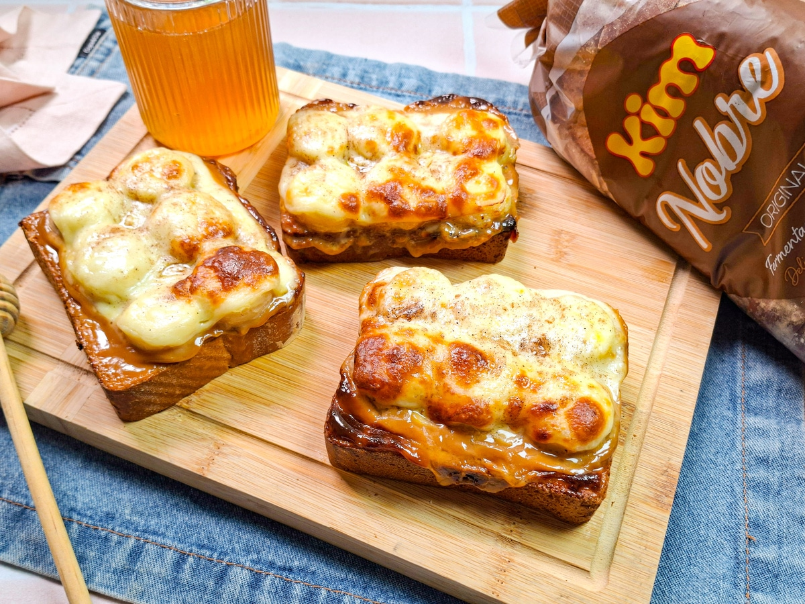

Pagina inicial
Banana toast

Descrição
Uma daquelas receitas simples que entregam muito sabor com pouquíssimo esforço.
Perfeita para um café da manhã especial ou um lanche doce e reconfortante, combina o cremoso do doce de leite, a doçura natural da banana e o derretido da mussarela, criando uma camada irresistível de sabores e texturas.
Ingredientes
- 3 fatias de Pão de Forma Nobre Original da Kim
- 150 gramas de doce de leite
- 2 bananas maduras
- 3 fatias de queijo mussarela
- Canela em pó a gosto
- Mel a gosto
Passos
- Reúna todos os ingredientes para essa receitinha deliciosa! Descasque e corte as bananas em rodelas finas e regulares;
- Disponha as fatias de pão em uma tábua e com a ajuda de uma faca, espalhe uma camada generosa de doce de leite sobre cada fatia. Procure cobrir toda a superfície
- Em seguida, distribua as rodelas de banana por cima do doce de leite, alinhando-as lado a lado até preencher completamente a fatia de pão. Pressione levemente para fixar;
- Coloque uma fatia de mussarela sobre cada pão montado, cobrindo bem as bananas. Polvilhe um pouco de canela em pó por cima, para realçar seus sabores;
- Leve à air fryer, sem sobreposição, a 200 ºC por cerca de 5 minutinhos ou até perceber que o queijo derreteu bem e ganhou uma leve cor dourada;
- E está pronto! Retire as toasts com cuidado e finalize com um fio de mel para mais brilho e doçura. Bom apetite!
Fonte: Receitaria